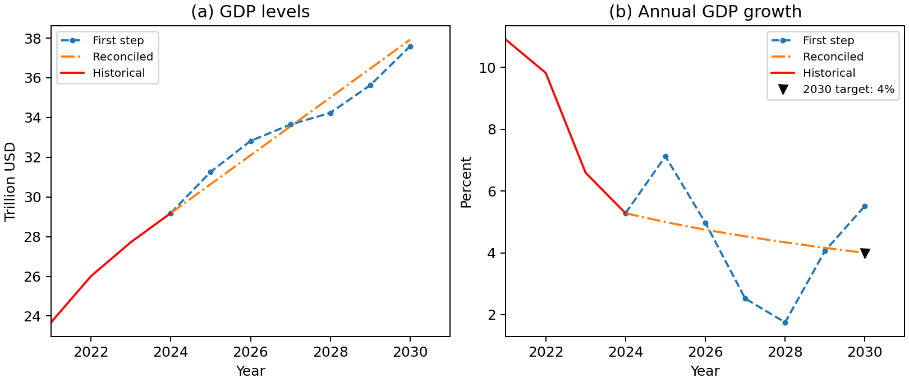
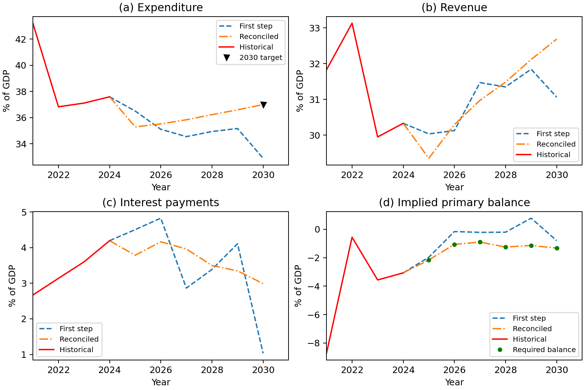

Examples¶
These examples show how to incorporate economic constraints into forecasts. The GDP example introduces the workflow with a single growth target. The fiscal example extends it to several variables linked by an accounting identity, while the final example shows how to apply reconciliation to forecasts from another model or from expert judgment.
GDP forecasting with a growth target¶
This example forecasts US nominal GDP for 2025-2030 with an illustrative
terminal growth target of 4 percent. The bundled data contain annual observations
for 1950-2024 in trillions of US dollars, followed by six missing values
to forecast.
No data download is needed. Install the repository checkout with
python -m pip install -e ., then run:
import numpy as np
from sklearn.linear_model import LinearRegression
from sktime.forecasting.compose import make_reduction
from macroframe_forecast import MFF
from macroframe_forecast.examples import generate_example_GDP_df
data = generate_example_GDP_df()
model = MFF(
data,
forecaster=make_reduction(
LinearRegression(), strategy="direct", window_length=6,
),
equality_constraints=["GDP_2030 - 1.04 * GDP_2029"],
parallelize=False,
)
forecasts = model.fit()
growth_2030 = 100 * (forecasts.loc[2030, "GDP"] / forecasts.loc[2029, "GDP"] - 1)
print(f"Reconciled GDP growth in 2030: {growth_2030:.4f}%")
np.testing.assert_allclose(growth_2030, 4.0, rtol=0, atol=1e-8)
Reconciled GDP growth in 2030: 4.0000%
The constraint rewrites GDP_2030 / GDP_2029 - 1 = 0.04 as a linear
expression equal to zero. model.df1 contains the first-step forecasts;
forecasts (also available as model.df2) contains the reconciled values.
Both include the historical data.
The first stage fits a separate ordinary least squares regression for each forecast horizon, using the six most recent observed GDP values as predictors. This is direct autoregressive forecasting: each horizon has its own fitted coefficients. The first-stage regressions do not use the 4 percent target. MFF then estimates forecast-error weights and smoothing parameters from historical backtests and reconciles the forecasts. No smoothing parameter is specified in this example.
Compare annual growth before and after reconciliation:
import pandas as pd
growth_comparison = pd.DataFrame({
"First step": model.df1["GDP"],
"Reconciled": forecasts["GDP"],
}).pct_change(fill_method=None) * 100
print(growth_comparison.loc[2025:2030].round(2).to_string())
First step Reconciled
year
2025 7.12 4.99
2026 4.98 4.75
2027 2.52 4.53
2028 1.75 4.34
2029 4.06 4.16
2030 5.52 4.00
The first-step growth rates vary across forecast years. Reconciliation smooths GDP levels within the forecast horizon and meets the terminal target, changing 2030 growth from about 5.52 percent to 4 percent. The historical observations remain unchanged.
Plot the levels and annual growth rates using the fitted model. Run this block
in the same session; it also saves gdp_forecasts.png in the current directory.
import matplotlib.pyplot as plt
import pandas as pd
levels = pd.DataFrame({
"First step": model.df1["GDP"],
"Reconciled": forecasts["GDP"],
"Historical": data["GDP"],
})
# Calculate growth before selecting the plotting window, without filling NaNs.
growth = levels.pct_change(fill_method=None) * 100
fig, axes = plt.subplots(1, 2, figsize=(9, 3.8), layout="constrained")
for ax, series, title, units in zip(
axes, [levels, growth], ["(a) GDP levels", "(b) Annual GDP growth"],
["Trillion USD", "Percent"],
):
ax.plot(series["First step"].loc[2024:], "--o", markersize=3, label="First step")
ax.plot(series["Reconciled"].loc[2024:], "-.", label="Reconciled")
ax.plot(series["Historical"].loc[2021:2024], color="red", label="Historical")
ax.set(title=title, xlabel="Year", ylabel=units, xlim=(2021, 2031))
ax.set_xticks([2022, 2024, 2026, 2028, 2030])
axes[1].plot(2030, 4, "v", color="black", label="2030 target: 4%")
for ax in axes:
ax.legend(fontsize=8)
fig.savefig("gdp_forecasts.png", dpi=180)
plt.show()


US nominal GDP forecasts for 2025-2030. Source: IMF April 2025 World Economic Outlook example and package calculations.¶
The self-contained reproduction script
generates this figure, saves both forecast stages, and verifies the terminal
target and preservation of historical observations. From the repository root,
run python paper/reproduce_figures.py. Outputs are saved in
build/paper-figures/; the
reproduction instructions describe the files.
The following fiscal example extends the workflow to constraints linking several variables.
Fiscal forecasting walkthrough¶
Suppose we know the primary-balance path for the United States through 2030, while expenditure, revenue, and interest payments still need to be forecasted. We also want expenditure to reach 37 percent of GDP in 2030. Forecasting each series separately does not guarantee that the results satisfy those conditions. This example shows how MFF adjusts the forecasts jointly.
All quantities below are percentages of GDP. Run the Python blocks in order in one session. They include all required imports and use bundled data, without an external download. To use the new example helper, install this repository checkout from its root before starting:
python -m pip install -e .
Load the data¶
import numpy as np
import pandas as pd
from sklearn.linear_model import LinearRegression
from sktime.forecasting.compose import DirectReductionForecaster
from macroframe_forecast import MFF
from macroframe_forecast.examples import generate_example_fiscal_df
data = generate_example_fiscal_df()
print(data.loc[2024:2026].to_string())
exp rev int_payments pb
year
2024 37.593 30.331 4.195 -3.067
2025 NaN NaN NaN -2.158
2026 NaN NaN NaN -1.063
The index identifies the year. exp is expenditure, rev is revenue,
int_payments is interest payments, and pb is the primary balance.
Observations run from 2001 through 2024. The missing values (NaN) tell MFF
which cells to forecast for 2025-2030. The primary-balance values remain filled
because they are the prescribed path, not an additional forecast target.
Specify the constraints¶
The primary balance equals revenue minus expenditure plus interest payments. Moving every term to the left gives the expression MFF expects to equal zero:
constraints = [
"pb_? - rev_? + exp_? - int_payments_?",
"exp_2030 - 37",
]
The wildcard ? applies the accounting identity across forecast years. The second
expression applies only in 2030. The supplied primary-balance values enter the
identity as known quantities; MFF adjusts the other three variables to satisfy
it. Constraint strings contain expressions, without an = 0 suffix.
Fit and reconcile the forecasts¶
model = MFF(
data,
forecaster=DirectReductionForecaster(LinearRegression()),
equality_constraints=constraints,
parallelize=False,
)
reconciled = model.fit()
first_step = model.df1
This example explicitly selects ordinary least squares (OLS), with direct
forecasting for each horizon. The first stage produces forecasts independently
of the accounting constraints. MFF then estimates forecast-error weights and
smoothing parameters from historical backtests and jointly reconciles the
forecasts. first_step contains the initial forecasts, while reconciled
contains the final values. Both retain the historical observations.
Inspect the results¶
variables = ["exp", "rev", "int_payments"]
comparison = pd.DataFrame({
"First step": first_step.loc[2030, variables],
"Reconciled": reconciled.loc[2030, variables],
})
print(comparison.round(2).to_string())
First step Reconciled
exp 32.90 37.00
rev 31.06 32.70
int_payments 1.03 2.98
Expenditure reaches the required 37 percent of GDP. Revenue and interest
payments change as well: all three adjustments must be consistent with the
prescribed primary balance. At the displayed precision, the 2030 balance is
32.70 - 37.00 + 2.98 = -1.32 percent of GDP; the unrounded result matches the
supplied value of -1.324.


First-step and reconciled US fiscal forecasts, in percent of GDP. Source: IMF April 2025 World Economic Outlook example and package calculations.¶
The blue dashed lines show the first-stage OLS forecasts; the orange lines show
the reconciled forecasts. The final paths are smoother across the forecast
years, particularly for expenditure and interest payments. The black triangle
marks the expenditure target. In the primary-balance panel, each line is
calculated as rev - exp + int_payments so that we can compare the implied
balance with the green points showing the required path.
These outputs were reproduced with Python 3.12.3, NumPy 2.5.4, pandas 3.0.6, SciPy 1.18.1, scikit-learn 1.9.1, sktime 1.2.0, and matplotlib 3.11.2. Numerical results can vary with dependency versions.
Verify the conditions¶
years = slice(2025, 2030)
first_balance = first_step["rev"] - first_step["exp"] + first_step["int_payments"]
final_balance = reconciled["rev"] - reconciled["exp"] + reconciled["int_payments"]
first_error = (first_balance - data["pb"]).loc[years].abs().max()
final_error = (final_balance - data["pb"]).loc[years].abs().max()
print(f"Largest first-step balance error: {first_error:.4f}")
print(f"Largest reconciled balance error: {final_error:.4f}")
np.testing.assert_allclose(final_balance.loc[years], data.loc[years, "pb"], rtol=0, atol=1e-8)
np.testing.assert_allclose(reconciled.loc[2030, "exp"], 37, rtol=0, atol=1e-8)
pd.testing.assert_frame_equal(reconciled.loc[:2024], data.loc[:2024])
pd.testing.assert_series_equal(reconciled["pb"], data["pb"])
Largest first-step balance error: 1.9161
Largest reconciled balance error: 0.0000
Errors are in percentage points of GDP. The assertions check both constraints within numerical tolerance and confirm that historical values and the supplied primary-balance path are unchanged.
Reproduce the figure¶
The complete reproduction script
uses the same data and model, includes the plotting code, and saves the figure,
forecast values, and dependency versions. From the repository root, run:
python paper/reproduce_figures.py --example fiscal
The outputs appear in build/paper-figures/. See the
reproduction instructions for details.
To refresh the documentation image after regenerating the figure, copy
build/paper-figures/fiscal_forecasts.png to
docs/source/_static/fiscal_forecasts.png.
Advanced: reconcile externally supplied forecasts¶
You can use the reconciliation step without fitting an MFF model. For
example, the GDP forecasts below might come from another model or from expert
judgment. This block runs independently of the examples above and includes
all imports and inputs.
import numpy as np
import pandas as pd
from macroframe_forecast.utils import GenSmoothingMatrix, Reconciliation
# One entry for each (variable, year), in trillions of USD.
cells = pd.MultiIndex.from_product([["GDP"], range(2025, 2031)])
initial = pd.Series([29.0, 31.5, 33.0, 34.1, 36.8, 39.0], index=cells)
# Identity weights give each forecast the same weight.
weights = pd.DataFrame(np.eye(len(cells)), index=cells, columns=cells)
smoothness = pd.Series([100.0], index=[cells])
penalty = GenSmoothingMatrix(weights, smoothness)
# GDP_2030 - 1.04 * GDP_2029 = 0, in matrix form C @ y = d.
C = pd.DataFrame([[0.0, 0.0, 0.0, 0.0, -1.04, 1.0]],
index=["terminal_growth"], columns=cells)
d = pd.DataFrame([0.0], index=C.index)
result = Reconciliation(initial, weights, penalty, C, d)
comparison = pd.DataFrame({"Supplied": initial, "Reconciled": result.iloc[:, 0]})
print(comparison.xs("GDP").round(2).to_string())
np.testing.assert_allclose(C.to_numpy() @ result.to_numpy(), d.to_numpy(), rtol=0, atol=1e-8)
Supplied Reconciled
2025 29.0 30.07
2026 31.5 31.65
2027 33.0 33.22
2028 34.1 34.76
2029 36.8 36.27
2030 39.0 37.72
Here the weight matrix and smoothing parameter are explicit illustrative
choices, rather than estimates from backtesting. GenSmoothingMatrix builds
the penalty, and Reconciliation uses that penalty and those weights to
adjust the supplied forecasts subject to the terminal growth constraint.
The row and column ordering must agree across the forecast vector, weights,
penalty, and constraint matrix. Increasing the smoothing parameter places
more weight on reducing changes in the slope of the forecast path; zero
removes that penalty.